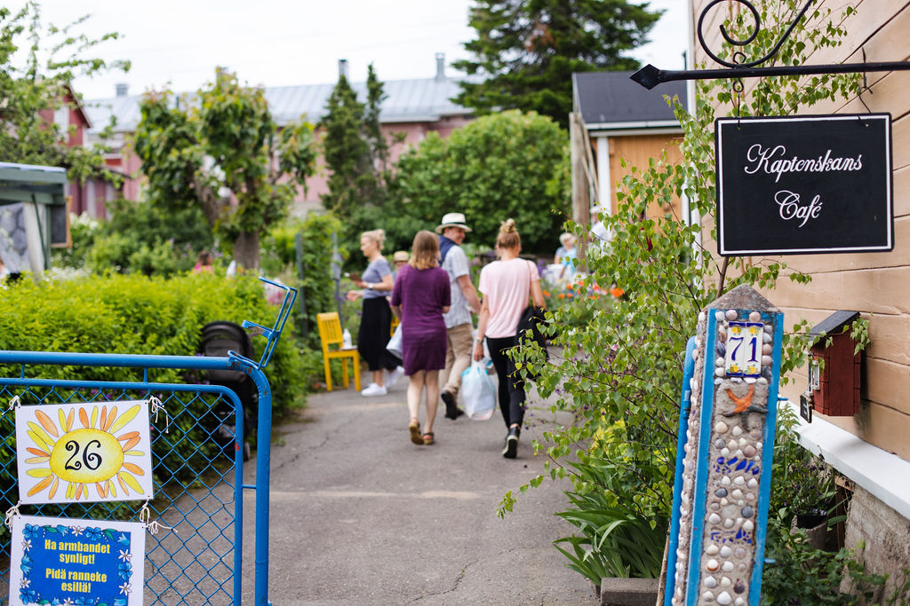
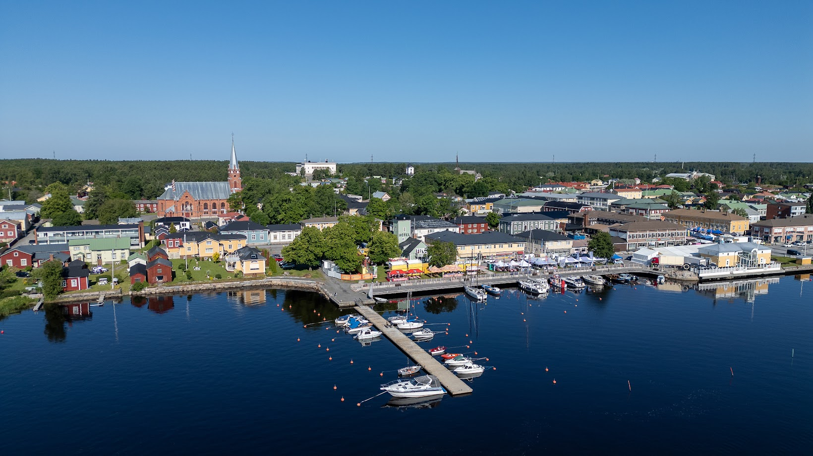
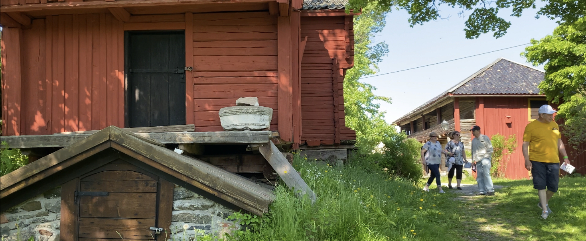
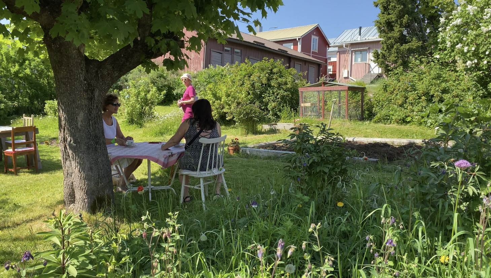

Kulttuuri ja taide
Näyttelyitä, yhteisöllistä ohjelmaa ja elämyksiä, jotka tuovat esiin sekä puutarhaa että rakennusperintöä.
Kesäkuussa · Kristiinankaupungin keskusta
Avoimet portit ovat kulttuuritapahtuma kotipihoissa: vieraanvaraiset pihat, joita ei arjessa näe, kutsuvat tutustumaan vanhan puutalokaupungin kulttuurielämään ja kesäkuun kukkaloistoon.

Tapahtuman järjestää Avoimet Portit -työryhmä yhteistyössä pihanomistajien, yhdistysten, yrittäjien ja taiteilijoiden sekä kaupungin palvelualueiden kanssa.
Kesäkuussa osa keskustan talon omistajista avaa porttinsa: pääset ihailemaan idyllisiä pihoja ja puutarhoja, joita muuten ihaillaan vain aidan yli. Jotkut isännät ja emännät tarjoavat myös kurkistuksen sisätiloihin.
Kristiinankaupunki on yksi Suomen parhaiten säilyneistä puukaupungeista ja Cittaslow-yhteisön jäsen — täydellinen näyttämö hitaalle, aistilliselle kaupunkilomalle.
Näyttelyitä, yhteisöllistä ohjelmaa ja elämyksiä, jotka tuovat esiin sekä puutarhaa että rakennusperintöä.
Kiveytyksiä, kukkaloistoa, yksityiskohtia ja tarinoita — jokainen kohde on omanlaisensa.
Tapahtuman yhteyteen kannattaa yhdistää museo- ja galleriakäyntejä — katso päivitetyt vinkit Tervetuloa Kristiinaan.
Tervetuloa Kristiinaan Vanhat kartat
Aitoja näkymiä vanhasta puutalokaupungista — sama miljöö, jossa Avoimet portit -tapahtuma järjestetään.



Kuvat: Avoimet portit — työryhmän ja tapahtuman kuva-arkisto.
Tapahtuma levittäytyy kävelymatkan päähän matkailuinfosta ja vanhan kaupungin ruutukaava-alueesta. Tarkat kohteet julkaistaan virallisilla sivuilla lähempänä tapahtumaa.
Avaa suurempi kartta (OpenStreetMap) Kartta © OpenStreetMapin tekijät
Lipun (ranneke) hintaan sisältyy vierailukohdetiedot, kartta kohteista ja tapahtumaohjelma.
Täytä ilmoittautumislomake. Tiedot lähetetään Kristiinankaupungin matkailun viralliseen osoitteeseen visit@krs.fi.
Avoimet Portit -työryhmä ja Kristiinankaupungin matkailu
Kristiinankaupungin matkailu
Sjögatan 49 / Merikatu 49
64100 Kristiinankaupunki
Kymmenen vapaaehtoisen jäsenen joukko on kulkenut pitkän matkan yhdessä — suurin osa heistä on ollut mukana aivan alusta saakka. Heitä yhdistää halu tehdä jotain, mikä näkyy ja tuntuu koko yhteisössä.
Tämän porukan käsissä syntyvät sekä Avoimet Portit että Merikaupungin joulukodit, kaksi tapahtumaa, jotka keräävät vuosittain yhteen niin paikalliset kuin kauempaakin tulevat vieraat. Kaikki toteutetaan talkoovoimin: ideointi, suunnittelu, järjestelyt ja viimeisetkin yksityiskohdat. Jokainen jäsen tuo mukanaan oman osaamisensa, energiansa ja intohimonsa — ja juuri siksi nämä tapahtumat ovat niin ainutlaatuisia.
Työryhmä ei ole vain joukko vapaaehtoisia. Se on yhteisö, joka rakentaa elämyksiä, vaalii paikallista kulttuuria ja luo hetkiä, jotka jäävät jokaisen mieleen pitkäksi aikaa.